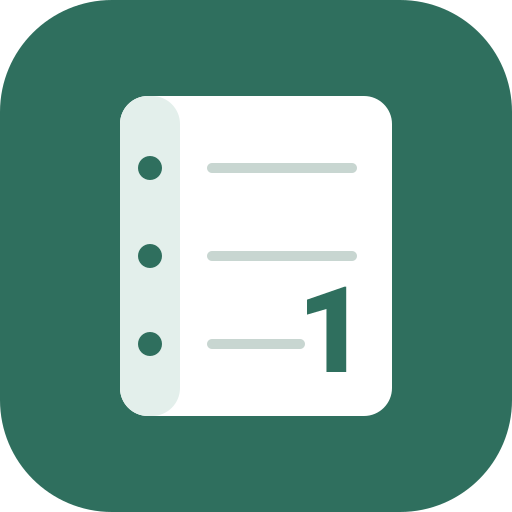

Noten-Fritze ist umgezogen
Die neue Adresse lautet noten-fritze.de.
Hier liegen noch deine Daten aus der alten Adresse: . Sie sind an die Adresse gebunden und müssen einmal mitgenommen werden.
Du nutzt Noten-Fritze als installierte App. Die neue Adresse braucht eine neue App. So nimmst du deine Daten mit:
Die Datei z. B. in der Dateien-App („In Dateien sichern“) ablegen.- noten-fritze.de im Browser öffnen und dort neu installieren (iPad/iPhone: Safari → Teilen → „Zum Home-Bildschirm“).
- Die neue App öffnen → ⚙️ Einstellungen → „Backup importieren“ → die Datei wählen und „Alle bestehenden Daten vorher löschen“ anhaken.
- Prüfen, ob alles da ist. Erst dann diese alte App löschen.
Diese alte App erst löschen, wenn deine Daten in der neuen App angekommen sind – mit der App werden auch die Daten darin gelöscht.
Am Computer geht es auch direkt:
Dabei wird zur Sicherheit automatisch eine Backup-Datei heruntergeladen.
Klappt nicht? Übertragung per Backup-Datei
- noten-fritze.de öffnen.
- ⚙️ Einstellungen → „Backup importieren“ → die Datei wählen und „Alle bestehenden Daten vorher löschen“ anhaken.
Die Daten hier werden dabei nicht gelöscht. Arbeite danach aber nur noch auf noten-fritze.de weiter.
Du hast Noten-Fritze auch als App auf dem Home-Bildschirm? Dann liegen deine Daten in der App. Öffne die alte App – sie zeigt dir, wie du umziehst. Lösche sie erst, wenn die Daten in der neuen App angekommen sind.